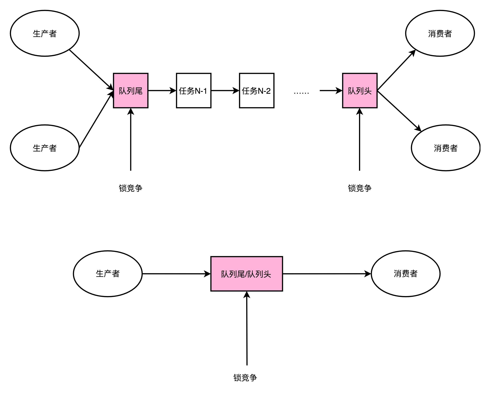
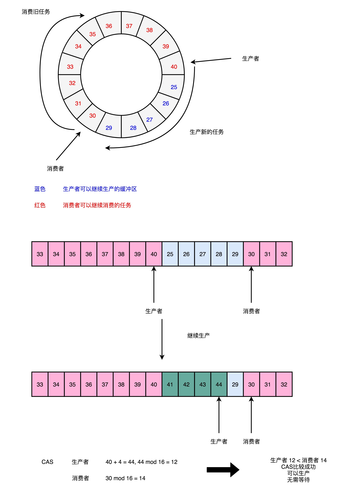

- 00 开篇词 为什么你需要学习计算机组成原理？.md.html
- 01 冯·诺依曼体系结构：计算机组成的金字塔.md.html
- 02 给你一张知识地图，计算机组成原理应该这么学.md.html
- 03 通过你的CPU主频，我们来谈谈“性能”究竟是什么？.md.html
- 04 穿越功耗墙，我们该从哪些方面提升“性能”？.md.html
- 05 计算机指令：让我们试试用纸带编程.md.html
- 06 指令跳转：原来if...else就是goto.md.html
- 07 函数调用：为什么会发生stack overflow？.md.html
- 08 ELF和静态链接：为什么程序无法同时在Linux和Windows下运行？.md.html
- 09 程序装载：“640K内存”真的不够用么？.md.html
- 10 动态链接：程序内部的“共享单车”.md.html
- 11 二进制编码：“手持两把锟斤拷，口中疾呼烫烫烫”？.md.html
- 12 理解电路：从电报机到门电路，我们如何做到“千里传信”？.md.html
- 13 加法器：如何像搭乐高一样搭电路（上）？.md.html
- 14 乘法器：如何像搭乐高一样搭电路（下）？.md.html
- 15 浮点数和定点数（上）：怎么用有限的Bit表示尽可能多的信息？.md.html
- 16 浮点数和定点数（下）：深入理解浮点数到底有什么用？.md.html
- 17 建立数据通路（上）：指令加运算=CPU.md.html
- 18 建立数据通路（中）：指令加运算=CPU.md.html
- 19 建立数据通路（下）：指令加运算=CPU.md.html
- 20 面向流水线的指令设计（上）：一心多用的现代CPU.md.html
- 21 面向流水线的指令设计（下）：奔腾4是怎么失败的？.md.html
- 22 冒险和预测（一）：hazard是“危”也是“机”.md.html
- 23 冒险和预测（二）：流水线里的接力赛.md.html
- 24 冒险和预测（三）：CPU里的“线程池”.md.html
- 25 冒险和预测（四）：今天下雨了，明天还会下雨么？.md.html
- 26 Superscalar和VLIW：如何让CPU的吞吐率超过1？.md.html
- 27 SIMD：如何加速矩阵乘法？.md.html
- 28 异常和中断：程序出错了怎么办？.md.html
- 29 CISC和RISC：为什么手机芯片都是ARM？.md.html
- 30 GPU（上）：为什么玩游戏需要使用GPU？.md.html
- 31 GPU（下）：为什么深度学习需要使用GPU？.md.html
- 32 FPGA、ASIC和TPU（上）：计算机体系结构的黄金时代.md.html
- 33 解读TPU：设计和拆解一块ASIC芯片.md.html
- 34 理解虚拟机：你在云上拿到的计算机是什么样的？.md.html
- 35 存储器层次结构全景：数据存储的大金字塔长什么样？.md.html
- 36 局部性原理：数据库性能跟不上，加个缓存就好了？.md.html
- 37 理解CPU Cache（上）：“4毫秒”究竟值多少钱？.md.html
- 38 高速缓存（下）：你确定你的数据更新了么？.md.html
- 39 MESI协议：如何让多核CPU的高速缓存保持一致？.md.html
- 40 理解内存（上）：虚拟内存和内存保护是什么？.md.html
- 41 理解内存（下）：解析TLB和内存保护.md.html
- 42 总线：计算机内部的高速公路.md.html
- 43 输入输出设备：我们并不是只能用灯泡显示“0”和“1”.md.html
- 44 理解IO_WAIT：IO性能到底是怎么回事儿？.md.html
- 45 机械硬盘：Google早期用过的“黑科技”.md.html
- 46 SSD硬盘（上）：如何完成性能优化的KPI？.md.html
- 47 SSD硬盘（下）：如何完成性能优化的KPI？.md.html
- 48 DMA：为什么Kafka这么快？.md.html
- 49 数据完整性（上）：硬件坏了怎么办？.md.html
- 50 数据完整性（下）：如何还原犯罪现场？.md.html
- 51 分布式计算：如果所有人的大脑都联网会怎样？.md.html
- 52 设计大型DMP系统（上）：MongoDB并不是什么灵丹妙药.md.html
- 53 设计大型DMP系统（下）：SSD拯救了所有的DBA.md.html
- 54 理解Disruptor（上）：带你体会CPU高速缓存的风驰电掣.md.html
- 55 理解Disruptor（下）：不需要换挡和踩刹车的CPU，有多快？.md.html
- 结束语 知也无涯，愿你也享受发现的乐趣.md.html
55 理解Disruptor（下）：不需要换挡和踩刹车的CPU，有多快？
上一讲，我们学习了一个精妙的想法，Disruptor 通过缓存行填充，来利用好 CPU 的高速缓存。不知道你做完课后思考题之后，有没有体会到高速缓存在实践中带来的速度提升呢？
不过，利用 CPU 高速缓存，只是 Disruptor“快”的一个因素，那今天我们就来看一看 Disruptor 快的另一个因素，也就是“无锁”，而尽可能发挥 CPU 本身的高速处理性能。
缓慢的锁
Disruptor 作为一个高性能的生产者 - 消费者队列系统，一个核心的设计就是通过 RingBuffer 实现一个无锁队列。
上一讲里我们讲过，Java 里面的基础库里，就有像 LinkedBlockingQueue 这样的队列库。但是，这个队列库比起 Disruptor 里用的 RingBuffer 要慢上很多。慢的第一个原因我们说过，因为链表的数据在内存里面的布局对于高速缓存并不友好，而 RingBuffer 所使用的数组则不然。

LinkedBlockingQueue 慢，有另外一个重要的因素，那就是它对于锁的依赖。在生产者 - 消费者模式里，我们可能有多个消费者，同样也可能有多个生产者。多个生产者都要往队列的尾指针里面添加新的任务，就会产生多个线程的竞争。于是，在做这个事情的时候，生产者就需要拿到对于队列尾部的锁。同样地，在多个消费者去消费队列头的时候，也就产生竞争。同样消费者也要拿到锁。
那只有一个生产者，或者一个消费者，我们是不是就没有这个锁竞争的问题了呢？很遗憾，答案还是否定的。一般来说，在生产者 - 消费者模式下，消费者要比生产者快。不然的话，队列会产生积压，队列里面的任务会越堆越多。
一方面，你会发现越来越多的任务没有能够及时完成；另一方面，我们的内存也会放不下。虽然生产者 - 消费者模型下，我们都有一个队列来作为缓冲区，但是大部分情况下，这个缓冲区里面是空的。也就是说，即使只有一个生产者和一个消费者者，这个生产者指向的队列尾和消费者指向的队列头是同一个节点。于是，这两个生产者和消费者之间一样会产生锁竞争。
在 LinkedBlockingQueue 上，这个锁机制是通过 synchronized 这个 Java 关键字来实现的。一般情况下，这个锁最终会对应到操作系统层面的加锁机制（OS-based Lock），这个锁机制需要由操作系统的内核来进行裁决。这个裁决，也需要通过一次上下文切换（Context Switch），把没有拿到锁的线程挂起等待。
不知道你还记不记得，我们在第 28 讲讲过的异常和中断，这里的上下文切换要做的和异常和中断里的是一样的。上下文切换的过程，需要把当前执行线程的寄存器等等的信息，保存到线程栈里面。而这个过程也必然意味着，已经加载到高速缓存里面的指令或者数据，又回到了主内存里面，会进一步拖慢我们的性能。
我们可以按照 Disruptor 介绍资料里提到的 Benchmark，写一段代码来看看，是不是真是这样的。这里我放了一段 Java 代码，代码的逻辑很简单，就是把一个 long 类型的 counter，从 0 自增到 5 亿。一种方式是没有任何锁，另外一个方式是每次自增的时候都要去取一个锁。
你可以在自己的电脑上试试跑一下这个程序。在我这里，两个方式执行所需要的时间分别是 207 毫秒和 9603 毫秒，性能差出了将近 50 倍。
package com.xuwenhao.perf.jmm;
import java.util.concurrent.atomic.AtomicLong;
import java.util.concurrent.locks.Lock;
import java.util.concurrent.locks.ReentrantLock;
public class LockBenchmark{
public static void runIncrement()
{
long counter = 0;
long max = 500000000L;
long start = System.currentTimeMillis();
while (counter < max) {
counter++;
}
long end = System.currentTimeMillis();
System.out.println("Time spent is " + (end-start) + "ms without lock");
}
public static void runIncrementWithLock()
{
Lock lock = new ReentrantLock();
long counter = 0;
long max = 500000000L;
long start = System.currentTimeMillis();
while (counter < max) {
if (lock.tryLock()){
counter++;
lock.unlock();
}
}
long end = System.currentTimeMillis();
System.out.println("Time spent is " + (end-start) + "ms with lock");
}
public static void main(String[] args) {
runIncrement();
runIncrementWithLock();
加锁和不加锁自增 counter
Time spent is 207ms without lock
Time spent is 9603ms with lock
性能差出将近 10 倍
无锁的 RingBuffer
加锁很慢，所以 Disruptor 的解决方案就是“无锁”。这个“无锁”指的是没有操作系统层面的锁。实际上，Disruptor 还是利用了一个 CPU 硬件支持的指令，称之为 CAS（Compare And Swap，比较和交换）。在 Intel CPU 里面，这个对应的指令就是 cmpxchg。那么下面，我们就一起从 Disruptor 的源码，到具体的硬件指令来看看这是怎么一回事儿。
Disruptor 的 RingBuffer 是这么设计的，它和直接在链表的头和尾加锁不同。Disruptor 的 RingBuffer 创建了一个 Sequence 对象，用来指向当前的 RingBuffer 的头和尾。这个头和尾的标识呢，不是通过一个指针来实现的，而是通过一个序号。这也是为什么对应源码里面的类名叫 Sequence。

在这个 RingBuffer 当中，进行生产者和消费者之间的资源协调，采用的是对比序号的方式。当生产者想要往队列里加入新数据的时候，它会把当前的生产者的 Sequence 的序号，加上需要加入的新数据的数量，然后和实际的消费者所在的位置进行对比，看看队列里是不是有足够的空间加入这些数据，而不会覆盖掉消费者还没有处理完的数据。
在 Sequence 的代码里面，就是通过 compareAndSet 这个方法，并且最终调用到了 UNSAFE.compareAndSwapLong，也就是直接使用了 CAS 指令。
public boolean compareAndSet(final long expectedValue, final long newValue)
{
return UNSAFE.compareAndSwapLong(this, VALUE_OFFSET, expectedValue, newValue);
}
public long addAndGet(final long increment)
{
long currentValue;
long newValue;
do
{
currentValue = get();
newValue = currentValue + increment;
}
while (!compareAndSet(currentValue, newValue));
return newValue;
Sequence 源码中的 addAndGet，如果 CAS 的操作没有成功，它会不断忙等待地重试
这个 CAS 指令，也就是比较和交换的操作，并不是基础库里的一个函数。它也不是操作系统里面实现的一个系统调用，而是一个 CPU 硬件支持的机器指令。在我们服务器所使用的 Intel CPU 上，就是 cmpxchg 这个指令。
compxchg [ax] (隐式参数，EAX 累加器), [bx] (源操作数地址), [cx] (目标操作数地址)
复制代码
cmpxchg 指令，一共有三个操作数，第一个操作数不在指令里面出现，是一个隐式的操作数，也就是 EAX 累加寄存器里面的值。第二个操作数就是源操作数，并且指令会对比这个操作数和上面的累加寄存器里面的值。
如果值是相同的，那一方面，CPU 会把 ZF（也就是条件码寄存器里面零标志位的值）设置为 1，然后再把第三个操作数（也就是目标操作数），设置到源操作数的地址上。如果不相等的话，就会把源操作数里面的值，设置到累加器寄存器里面。
我在这里放了这个逻辑对应的伪代码，你可以看一下。如果你对汇编指令、条件码寄存器这些知识点有点儿模糊了，可以回头去看看第 5讲、第 6 讲关于汇编指令的部分。
IF [ax]< == [bx] THEN [ZF] = 1, [bx] = [cx]
ELSE [ZF] = 0, [ax] = [bx]
单个指令是原子的，这也就意味着在使用 CAS 操作的时候，我们不再需要单独进行加锁，直接调用就可以了。
没有了锁，CPU 这部高速跑车就像在赛道上行驶，不会遇到需要上下文切换这样的红灯而停下来。虽然会遇到像 CAS 这样复杂的机器指令，就好像赛道上会有 U 型弯一样，不过不用完全停下来等待，我们 CPU 运行起来仍然会快很多。
那么，CAS 操作到底会有多快呢？我们还是用一段 Java 代码来看一下。
package com.xuwenhao.perf.jmm;
import java.util.concurrent.atomic.AtomicLong;
import java.util.concurrent.locks.Lock;
import java.util.concurrent.locks.ReentrantLock;
public class LockBenchmark {
public static void runIncrementAtomic()
{
AtomicLong counter = new AtomicLong(0);
long max = 500000000L;
long start = System.currentTimeMillis();
while (counter.incrementAndGet() < max) {
}
long end = System.currentTimeMillis();
System.out.println("Time spent is " + (end-start) + "ms with cas");
}
public static void main(String[] args) {
runIncrementAtomic();
}
Time spent is 3867ms with cas
复制代码
和上面的 counter 自增一样，只不过这一次，自增我们采用了 AtomicLong 这个 Java 类。里面的 incrementAndGet 最终到了 CPU 指令层面，在实现的时候用的就是 CAS 操作。可以看到，它所花费的时间，虽然要比没有任何锁的操作慢上一个数量级，但是比起使用 ReentrantLock 这样的操作系统锁的机制，还是减少了一半以上的时间。
总结延伸
好了，咱们专栏的正文内容到今天就要结束了。今天最后一讲，我带着你一起看了 Disruptor 代码的一个核心设计，也就是它的 RingBuffer 是怎么做到无锁的。
Java 基础库里面的 BlockingQueue，都需要通过显示地加锁来保障生产者之间、消费者之间，乃至生产者和消费者之间，不会发生锁冲突的问题。
但是，加锁会大大拖慢我们的性能。在获取锁过程中，CPU 没有去执行计算的相关指令，而要等待操作系统进行锁竞争的裁决。而那些没有拿到锁而被挂起等待的线程，则需要进行上下文切换。这个上下文切换，会把挂起线程的寄存器里的数据放到线程的程序栈里面去。这也意味着，加载到高速缓存里面的数据也失效了，程序就变得更慢了。
Disruptor 里的 RingBuffer 采用了一个无锁的解决方案，通过 CAS 这样的操作，去进行序号的自增和对比，使得 CPU 不需要获取操作系统的锁。而是能够继续顺序地执行 CPU 指令。没有上下文切换、没有操作系统锁，自然程序就跑得快了。不过因为采用了 CAS 这样的忙等待（Busy-Wait）的方式，会使得我们的 CPU 始终满负荷运转，消耗更多的电，算是一个小小的缺点。
程序里面的 CAS 调用，映射到我们的 CPU 硬件层面，就是一个机器指令，这个指令就是 cmpxchg。可以看到，当想要追求最极致的性能的时候，我们会从应用层、贯穿到操作系统，乃至最后的 CPU 硬件，搞清楚从高级语言到系统调用，乃至最后的汇编指令，这整个过程是怎么执行代码的。而这个，也是学习组成原理这门专栏的意义所在。
推荐阅读
不知道上一讲说的 Disruptor 相关材料，你有没有读完呢？如果没有读完的话，我建议你还是先去研读一下。
如果你已经读完了，这里再给你推荐一些额外的阅读材料，那就是著名的Implement Lock-Free Queues这篇论文。你可以更深入地学习一下，怎么实现一个无锁队列。